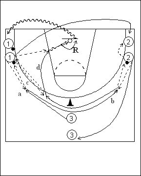

Catégorie : PASSES (Pas-001)
Déroulement
- Le premier joueur de la file 3 se déplace vers le premier joueur de la file 1 qui lui passe le ballon et le reçoit ensuite en retour (a). 3 va maintenant vers le premier joueur de la file 2 et réalise le même travail (b). Il revient vers 1 qui lui passe à nouveau le ballon (c). 3 termine par un « give and go » avec 1 (d).
- 3 réalise son rebond et va en dribble derrière le dernier joueur de la file 1. 1 va dans la file 2. Le premier joueur de cette file 2 donne le ballon au deuxième et va dans la file 3.
Coaching points
- Insister pour que 3 effectue de longs déplacements vers 1 et 2. 1 et 2 réalisent la passe et se déplacent latéralement ou vers 3 pour recevoir la passe retour.
- Varier les types de passes et demander une grande vitesse d’exécution.